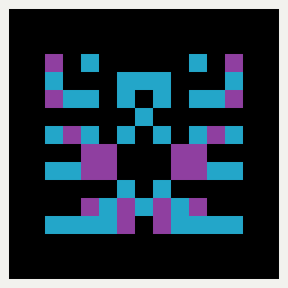
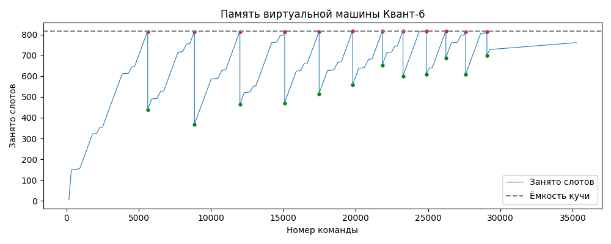

Лабораторная работа № 6: «Виртуальная машина Квант-6». Дисциплина «Языки программирования с управляемым кодом».
Студент: Хозиков Александр Алексеевич. Группа: ИУК2-31Б.
Индивидуальный картридж: 25КИ318.kv6. Дата работы: 12.11.2026.
GitHub: https://github.com/tiktok1aabb-tech/kvant6-lr6.
Ниже указаны реальные дата и время создания коммитов, полученные из истории Git репозитория (часовой пояс UTC+3). Соответствующие коммиты опубликованы на GitHub. Точный момент отправки команды git push отдельно не подтверждён и может отличаться от времени коммита.
| Этап | Дата и время коммита | Коммит на GitHub | Что выполнено |
|---|---|---|---|
| 0. Начало работы | 12.11.2026 13:08:18 (UTC+3) | 8142af6 | Созданы файлы проекта и репозиторий. |
| 1. Загрузчик | 12.11.2026 13:23:02 (UTC+3) | 65674e1 | Реализована загрузка картриджей. |
| 2. Дизассемблер | 12.11.2026 15:30:09 (UTC+3) | 6ffe0e3 | Получен листинг с метками. |
| 3. Стековый интерпретатор | 12.11.2026 16:09:22 (UTC+3) | ee8a49e | Добавлен компактный kvant.py. |
| 4. Вызовы функций, массивы и экран | 12.11.2026 16:32:35 (UTC+3) | 6ada0f0 | Добавлен рисунок экрана. |
| 5. Скрытые команды X1–X3 | 12.11.2026 16:56:53 (UTC+3) | b4e1af6 | Пустой коммит этапа. |
| 5. Уточнение этапа | 12.11.2026 17:00:19 (UTC+3) | 071e0e5 | Обновлён файл программы. |
| 6. Куча и сборщик мусора | 12.11.2026 17:34:29 (UTC+3) | cfe8a97 | Добавлены график и эксперимент. |
| 7. Оптимизация | 12.11.2026 18:03:36 (UTC+3) | 6e9151e | Изменён код оптимизации, добавлены замеры. |
Из выполненных действий: настроены Git и PyCharm, найдена проблема вызова системной команды python в PowerShell (вместо нужной среды), после чего автотесты запускались интерпретатором из виртуального окружения. По завершении этапов запускалась проверка test_kvant.py. Для подготовки архива были сохранены листинг, экран и график кучи.
| Поле | Значение |
|---|---|
| Владелец | 25КИ318 |
| Формат / тип | Версия 1.0 / основной картридж (0) |
| Ёмкость кучи | 816 слотов |
| Число глобальных | 8 |
| Точка входа | 537 (0x0219) |
| Строк в пуле | 14 |
| Длина кода | 6412 байт |
| Проверка SHA-256 | Совпадает |
Класс Reader читает u8, u16 и u32 в порядке big-endian. Функция load() проверяет сигнатуру KVNT, поля файла и SHA-256. Для испорченных данных предусмотрена LoadError. В начале работы возникала трудность с запуском Python через терминал; использован явный путь к интерпретатору из .venv.
Результат: 8 из 8 тестов.
Функции decode() и disassemble() разбирают байт-код, операнды команд и адреса переходов. Сформирован файл out/listing_25КИ318.txt.
Адреса функций, найденные по CALL: L_0000, L_001E, L_0085, L_00A6, L_00FB, L_012E, L_0180, L_0195, L_01AA, L_01CB, L_01D5. Названия функций не утверждаются без дополнительной трассировки.
Результат: 5 из 5 тестов.
Реализованы стек команд, 32-битная знаковая арифметика, переполнение через wrap32(), деление с округлением к нулю, сравнения, переходы и вывод. dis.dis() в CPython и дизассемблер «Кванта» отображают инструкции; интерпретатор выполняет их и изменяет стек и состояние машины.
Типовые ошибки (пустой стек, деление на ноль, неверная операция) проверяются автотестами и обрабатываются через VMError. Отдельная ошибка реализации на этом этапе в сохранившихся записях не зафиксирована, поэтому не приписывается задним числом.
Результат: 14 из 14 тестов.
CALL создаёт новый кадр вызова с локальными переменными и адресом возврата, RET возвращает результат. NEW, LEN, GETF, SETF работают с массивами в куче; PIX изменяет пиксели экрана 32×32.
Файл изображения: out/screen_25КИ318.png.

Рисунок на чёрном фоне: симметричная пиксельная фигура с бирюзовыми и фиолетовыми участками. В окончательном запуске ошибок ASSERT не обнаружено; конкретный ранее упавший ASSERT в истории работы не указан.
Результат: 14 из 14 тестов.
Семантика команд восстановлена по проверкам в индивидуальном картридже. В таблице — реальные пары входов и ожидаемые значения из листинга, итоговые формулы и примеры, проверяемые вручную.
| Команда | Тесты из листинга | Итоговая формула | Пример вручную |
|---|---|---|---|
| X1 | 14, 68 → 54; −12, −49 → 37; 88, 24 → 64; −27, 58 → 85; 57, −68 → 125 | wrap32(abs(a − b)) | −7, 5 → 12 |
| X2 | −21, −20 → −20; −89, −56 → −56; −8, 17 → 17; −30, 6 → 6; 84, −69 → 84 | wrap32(max(a, b)) | −7, 5 → 5 |
| X3 | 30, 18 → 6; 160, 60 → 20; 150, 130 → 10; 64, 8 → 8; −126, 99 → 9 | wrap32(gcd(a, b)) | −12, 18 → 6 |
Для отрицательных аргументов X1 возвращает модуль разности, X2 выбирает большее число со знаком, X3 вычисляет НОД модулей. Правая граница b = 32 не имеет специального смысла: в этих трёх командах нет сдвига на число бит. Промежуточные отвергнутые гипотезы в сохранённых материалах не зафиксированы, поэтому в журнале перечислены подтверждённые проверки и окончательный вывод без вымышленных этапов.
КОД-1: M44Z-C5PU. Проверка: ДА. Результат: 3 из 3 тестов.
Сборщик мусора использует алгоритм «пометка и очистка». Корнями являются стек, локальные переменные кадров и глобальные переменные. Достижимые объекты помечаются, недостижимые освобождаются; поэтому можно удалять циклы объектов без внешних ссылок.
КОД-2: 4WKR-RH9E. Проверка: ДА.
Послание инженера: «Нехватка памяти после сборки мусора соответствует OutOfMemoryError в Java.»
Статистика: 12 сборок мусора; 1542 объекта создано; 1345 освобождено; занято в конце 761 слот; пик 816 из 816 слотов.
График: out/heap_25КИ318.png.

График имеет пилообразную форму: между сборками выделяются новые массивы и число занятых слотов растёт. Красные точки показывают состояние кучи до запуска сборщика, зелёные — после него. Резкие снижения происходят при освобождении недостижимых объектов. Нижние точки постепенно увеличиваются, потому что часть памяти удерживается достижимыми объектами. Ссылки на них могут находиться в переменных, кадрах вызовов и других доступных объектах. К концу программы занятость остаётся высокой, но лимита памяти хватает для корректного завершения.
Эксперимент: experiments/gc_demo.py. Созданы два объекта с взаимными ссылками, удалены внешние переменные; слабая ссылка показывала, что до ручной gc.collect() объект оставался жив, а после сборки был удалён. При одном только подсчёте ссылок такой цикл не освободился бы.
Результат: 12 из 12 тестов.
Задача — ускорить выполнение байт-кода без изменения результатов. Бенчмарк BENCH.kv6 решает задачу Коллатца для начальных n от 1 до 4999 и исполняет 7 121 114 команд.
| Версия | Изменение | Время VM |
|---|---|---|
| До оптимизации | Обычное обращение к командам/обработчику | В среднем 3,167 с |
| После оптимизации | dict.get для кэша команд и локальная ссылка на step в цикле run() | В среднем 3,100 с |
Два результата выше получены в одной тестовой среде Linux/CPython 3.13.5; улучшение около 2,1% и может меняться от запуска к запуску. calibrate() не изменялась. Функция --profile используется для поиска затратных участков кода.
Отдельный замер на компьютере с PyCharm (по сохранённому снимку терминала): виртуальная машина — около 5,33 с; обычный Python — 0,1007 с; приблизительное отношение — 52,9 раза. Скорость VM — около 1 334 960 команд/с, КВАНТ-ИНДЕКС — 191. Результаты зависят от процессора, версии Python и текущей нагрузки. Нативный алгоритм находится в experiments/collatz_native.py; файлы замеров — в папке out.
Обычный Python быстрее, поскольку в виртуальной машине на одну инструкцию приходится несколько операций Python: расшифровка/поиск команды, работа со стеком и проверки типов. Ответ бенчмарка совпадает с эталоном: лучшее n = 3711, длина = 237, сумма длин = 387940. После оптимизации все проверки глав 1–6 проходят.
ИИ-ассистент использовался для разбора требований методички, сверки результатов, проверки кода, тестов и оформления журнала. Фактические результаты сверялись с выводом автопроверки и исполнением картриджей. На защите объяснять и изменять программу необходимо самостоятельно без ИИ.
Реализована виртуальная машина «Квант-6» на Python: загрузка картриджей, дизассемблирование, арифметика и стековый интерпретатор, функции и массивы, экран, три скрытые команды, сборка мусора и дополнительная оптимизация. Все 56 из 56 автотестов пройдены; окончательная оценка подтверждается на защите. В репозитории размещены основной скрипт, тесты, картриджи, листинг, график, экран и эксперименты.